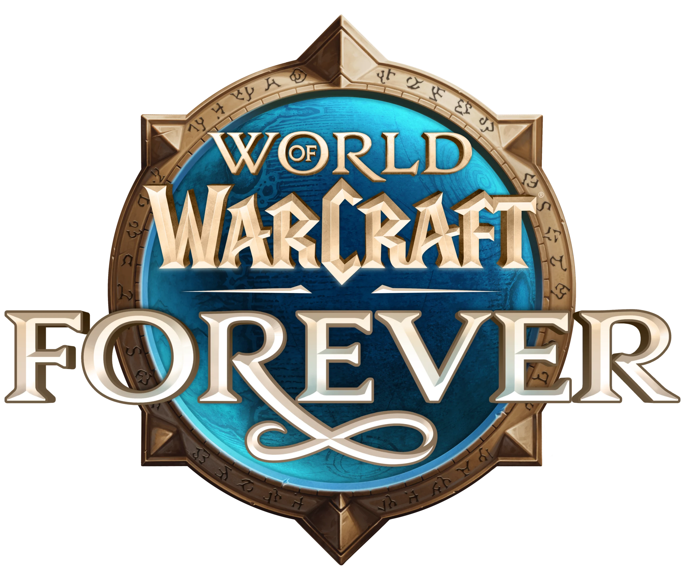
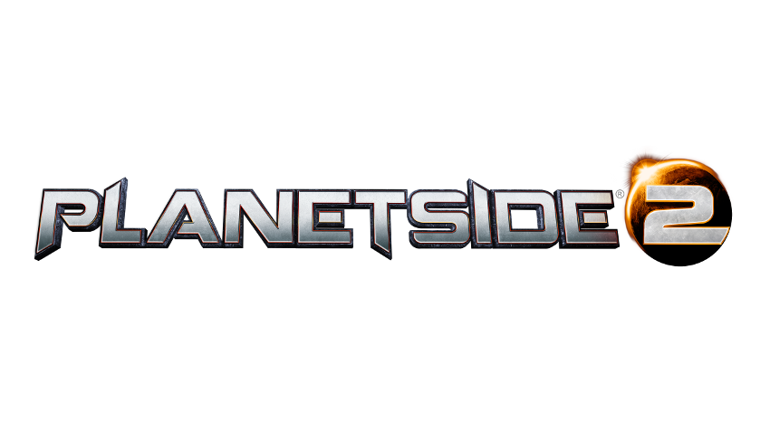

World of Warcraft
I inherited a love of the Blizzard title "World of Warcraft" from my parents, who played the original release of the MMORPG during 2004.I am currently enjoying the new release of WoW:Forever!

Since 2004, I have been a avid enjoyer of video games!

I inherited a love of the Blizzard title "World of Warcraft" from my parents, who played the original release of the MMORPG during 2004.I am currently enjoying the new release of WoW:Forever!

During my final two years of college, I was heavily immersed in the Eve Online world! This sci-fi MMO has you piloting countless different kinds of spaceships in a variety of playstyles.
During my time, I took part in the Guiness World Record breaking Battle of FWST-8!
Fury at FWST-8
At the start of high school, I started to play minecraft. It is a timeless classic, and has infinit replay value with modpack additions!

Towards the end of high school, I picked up a free to play MMOFPS called Planetside 2! In this game you lead dozens of members in a never-ending, sci-fi battlefield in battles with hundreds of other players!